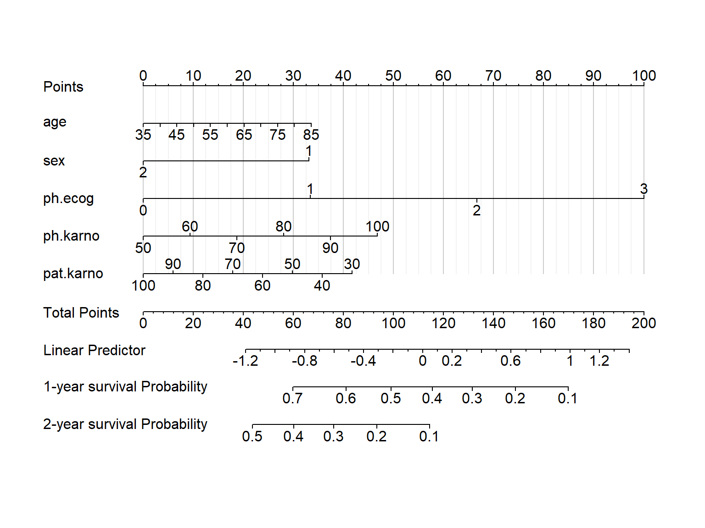
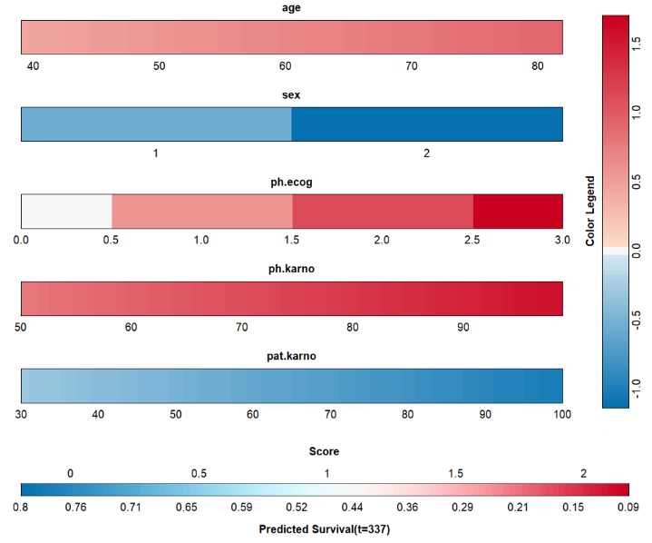

# 加载需要的R包和数据
library(survival)
library(rms)
## Loading required package: Hmisc
## Loading required package: lattice
## Loading required package: Formula
## Loading required package: ggplot2
## Warning: package 'ggplot2' was built under R version 4.2.3
##
## Attaching package: 'Hmisc'
## The following objects are masked from 'package:base':
##
## format.pval, units
## Loading required package: SparseM
##
## Attaching package: 'SparseM'
## The following object is masked from 'package:base':
##
## backsolve
rm(list = ls())
dim(lung)
## [1] 228 10
str(lung)
## 'data.frame': 228 obs. of 10 variables:
## $ inst : num 3 3 3 5 1 12 7 11 1 7 ...
## $ time : num 306 455 1010 210 883 ...
## $ status : num 2 2 1 2 2 1 2 2 2 2 ...
## $ age : num 74 68 56 57 60 74 68 71 53 61 ...
## $ sex : num 1 1 1 1 1 1 2 2 1 1 ...
## $ ph.ecog : num 1 0 0 1 0 1 2 2 1 2 ...
## $ ph.karno : num 90 90 90 90 100 50 70 60 70 70 ...
## $ pat.karno: num 100 90 90 60 90 80 60 80 80 70 ...
## $ meal.cal : num 1175 1225 NA 1150 NA ...
## $ wt.loss : num NA 15 15 11 0 0 10 1 16 34 ...3 Cox回归列线图绘制
Cox比例风险模型也是多因素回归模型的一种，在考虑结局时，还加入了时间因素的影响。
列线图（Alignment Diagram），又称诺莫图（Nomogram图），用来把多因素回归分析结果（logistic回归和cox回归）用图形方式表现出来，将多个预测指标进行整合，然后采用带有刻度的线段，按照一定的比例绘制在同一平面上，从而用以表达预测模型中各个变量之间的相互关系。
根据模型中各个影响因素对结局变量的贡献程度（回归系数的大小），给每个影响因素的每个取值水平进行赋分，然后再将各个评分相加得到总评分，最后通过总评分与结局事件发生概率之间的函数转换关系，从而计算出该个体结局事件的预测值。
简单地说，就是把你的模型用图形化的方式展示出来。
列线图无论是在单纯的临床预测模型类文章、还是和生信数据挖掘结合的预测模型类文章中，都是标配。
下面给大家介绍4种cox回归列线图的绘制方法。
3.1 加载数据和R包
Cox回归模型在医学统计中是一个很重要的统计方法，关于Cox比例风险模型，我写过一些实现方法的推文，大家可以参考：
3.2 方法1
大多数情况下都是使用1代表死亡，0代表删失，下面这个演示数据集用2代表死亡。在这里没有影响，但有的R包会报错，需要注意！
# 使用rms包需要对数据进行“打包”操作
dd <- datadist(lung)
options(datadist = "dd")构建cox比例风险模型：
coxfit <- cph(Surv(time, status) ~ age + sex + ph.ecog + ph.karno + pat.karno,
data = lung, x=T,y=T,surv = T
)
# 构建生存函数，注意你的最大生存时间
surv <- Survival(coxfit)
surv1 <- function(x) surv(365,x) # 1年OS
surv2 <- function(x) surv(365*2,x) # 2年OS
nom <- nomogram(coxfit,
fun = list(surv1,surv2),
lp = T,
funlabel = c('1-year survival Probability',
'2-year survival Probability'),
maxscale = 100,
fun.at = c(0.95,0.9,0.8,0.7,0.6,0.5,0.4,0.3,0.2,0.1))然后就是画图：
plot(nom,
lplabel="Linear Predictor",
xfrac = 0.2, # 左侧标签距离坐标轴的距离
#varname.label = TRUE,
tcl = -0.2, # 刻度长短和方向
lmgp = 0.1, # 坐标轴标签距离坐标轴远近
points.label ='Points',
total.points.label = 'Total Points',
cap.labels = FALSE,
cex.var = 1, # 左侧标签字体大小
cex.axis = 1, # 坐标轴字体大小
col.grid = gray(c(0.8, 0.95))) # 竖线颜色
3.3 方法2
使用这种方法会在你的Rstudio中弹出一个窗口，你可以自由调节其中给出的选项。
library(DynNom)
coxfit <- cph(Surv(time, status) ~ age + sex + ph.ecog + ph.karno + pat.karno,
data = lung, x=T,y=T,surv = T
)
DynNom(coxfit,
DNxlab = "Survival probability",
KMtitle="Kaplan-Meier plot",
KMxlab = "Time (Days)",
KMylab = "Survival probability")选择好你的参数，点击Predict即可出图：

仔细看上面这个图其实有错误，sex作为性别，只有2种可能：男或女，所以只能是1或者2，不可能为小数，这就提醒我们在建立模型时需要把这样的变量先因子化。
3.4 方法3
使用regplot包实现，这个包很强大，以后还会经常用到。
library(regplot)
coxfit <- cph(Surv(time, status) ~ age + sex + ph.ecog + ph.karno + pat.karno,
data = lung, x=T,y=T,surv = T
)
regplot(coxfit,
#连续性变量形状，"no plot""density""boxes""ecdf"
#"bars""boxplot""violin""bean" "spikes"；
#分类变量的形状，可选"no plot" "boxes" "bars" "spikes"
plots = c("violin", "boxes"),
observation = lung[1,], #用哪行观测，或者T F
center = T, # 对齐变量
subticks = T,
droplines = T,#是否画竖线
title = "nomogram",
points = T, # 截距项显示为0-100
odds = T, # 是否显示OR值
showP = T, # 是否显示变量的显著性标记
rank = "sd", # 根据sd给变量排序
interval="confidence", # 展示可信区间
clickable = F # 是否可以交互
)
## Regression coxfit cph formula:
## Surv(time, status) `~` age + sex + ph.ecog + ph.karno + pat.karno
## CI: 0.931(4.82,57.5)
## [[1]]
## pat.karno Points
## 1 30 61
## 2 50 49
## 3 70 37
## 4 90 25
##
## [[2]]
## ph.karno Points
## 1 50 1
## 2 60 11
## 3 70 20
## 4 80 29
## 5 90 39
## 6 100 48
##
## [[3]]
## ph.ecog Points
## 1 0.0 0
## 2 0.5 17
## 3 1.0 33
## 4 1.5 50
## 5 2.0 67
## 6 2.5 83
## 7 3.0 100
##
## [[4]]
## sex Points
## 1 1.0 45
## 2 1.4 31
## 3 1.8 18
##
## [[5]]
## age Points
## 1 35 13
## 2 45 20
## 3 55 26
## 4 65 33
## 5 75 40
## 6 85 47
##
## [[6]]
## Total Points Pr( time < 267 )
## 1 60 0.0889
## 2 80 0.1225
## 3 100 0.1676
## 4 120 0.2271
## 5 140 0.3034
## 6 160 0.3981
## 7 180 0.5097
## 8 200 0.6324
## 9 220 0.7546
## 10 240 0.8609
## 11 260 0.9373
3.5 方法4
library(VRPM)
library(survival)
cox_fit <- coxph(Surv(time, status) ~ age + sex + ph.ecog + ph.karno + pat.karno,
data = lung,
model = T)
# 图片保存在你的目录下
colplot(cox_fit,coloroptions = 3,filename = "cox.png")
以上就是4种Cox回归列线图绘制的方法，其中方法1和3是最常用的。